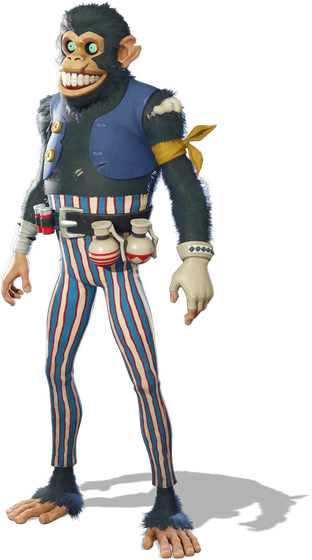
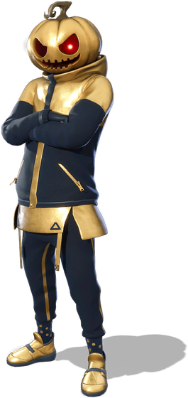
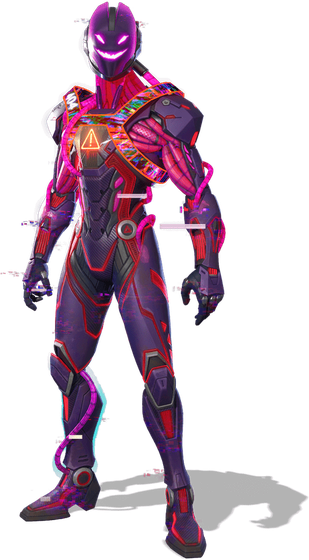

Trick or Chug
Geno has jammed a cursed cartridge into the Override console, and the Island has gone spooky. Here's everything Fortnitemares 2026 changes, from the fog to the Bonerattler.
Something has gone very wrong on the Island, and it's Geno's fault. The villain at the heart of this season has slotted a Cursed Cartridge into the Override console, and its corrupting power has spread everywhere. The sky is darker, fog rolls between the trees, and two brand-new places have appeared on the map. Welcome to Fortnitemares 2026, which arrived with update 42.30 on 1 October and runs until the season ends on 1 November.
Here's everything that changed, explained in the time it takes to drink a Chug Jug. (About five seconds, if you're not being shot at.)
Your Fortnitemares calendar
New placesTwo new spots, one green lake
Nightmare Neighborhood has replaced The Battlewoods. It's a creepy suburb ruled by a boss borrowed from an old horror film. Beat him and he drops a Legendary weapon, Freddy's Nightmare, which lets you teleport close to your next opponent for a surprise slash. Freaky Fields has replaced Latte Landing, so the cafés and houses that used to be there are gone. And over at WonkeeLand, the water has turned an ominous shade of green. Nobody is drinking that.
There's also a new landmark: a pizza restaurant full of animatronic robots from the Five Nights at Freddy's games. They roam the Island as bosses, and here's the clever bit: defeat one and you can possess its suit and fight as the robot yourself. See Drop Zone on page 10 for exactly where everything is.
New rulesSpooky Overrides
This season's big idea is Overrides: grab one at an Override Console and you change the rules for the rest of the match. Fortnitemares adds a ghoulish batch:
- Spooky Sprinter: you turn invisible while you sprint.
- Berserk: the lower your health drops, the harder you hit.
- Spooky Prop Hunt: disguise yourself as a Halloween prop. Be the pumpkin.
- Others let you swap your shield for extra health, or fire pumpkin rockets whenever you shoot.
New lootWhat's in, what's out
The vault report
The star of the new loot is the Bonerattler SMG. When you aim down its sights, it reveals enemies through walls, which is about as spooky as a gun can get. The Snack-O'-Lantern is a gadget that spills a pile of Exotic Candy in front of you when you throw it. And a whole graveyard of old favourites has been dug back up.
Small but mightyChanges you'll actually feel
- Smarter looting. When several items are on the floor, the game now picks up the one you can actually use first, instead of ammo you're already full on.
- Glowing bug. After drinking a Shield Potion, the "slurp glow" can stay on you for the rest of the match. Epic says a fix is coming in update 42.40.
- More modes, more fright. Horde Rush is back, Blitz Royale has the new weapons, and Reload went spooky on 8 October. Details on page 30.

FREEComplete this month's Fortnitemares quests to unlock this clockwork circus chimp and the rest of his set.

BONUSGiven free to anyone who redeems a Fortnite gift card during Fortnitemares. (Our cover star. Nice pumpkin.)

NEW"A conjuration from the depths of Geno's machine." One of the new spooky originals added this update.
Pictures: Epic Games / Fortnite.
Scare level: check before you play
Fortnitemares always invites guest characters from horror films and games, and some of this year's are properly scary. If jump-scares aren't your thing, stick to the daytime edges of the map and scroll quickly past the Halloween section of the Item Shop. There's no shame in it; even pros flinch.
The Chug Jug verdict
A great Fortnitemares. The fog makes every fight tense, Overrides keep matches unpredictable, and the Bonerattler is the most fun new weapon in ages. Our only grumble: three weeks isn't long enough.